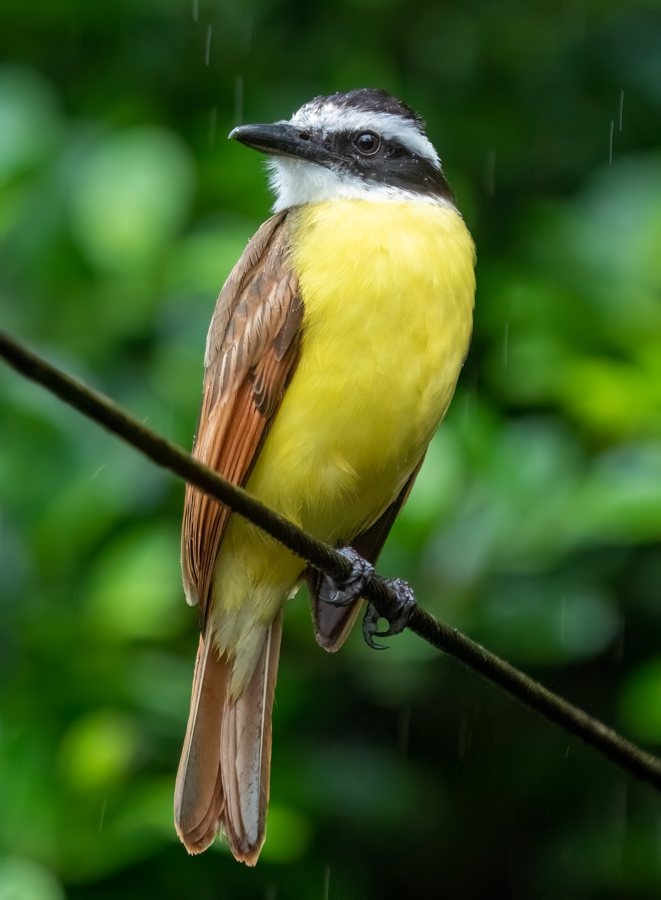
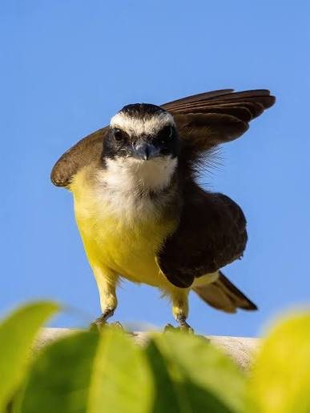
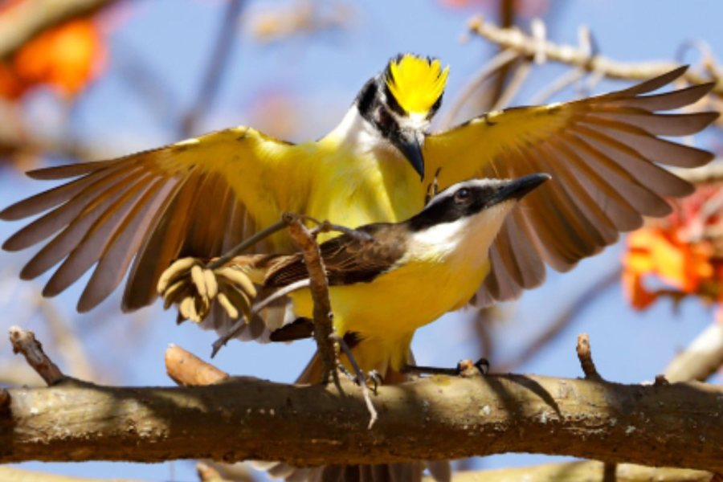
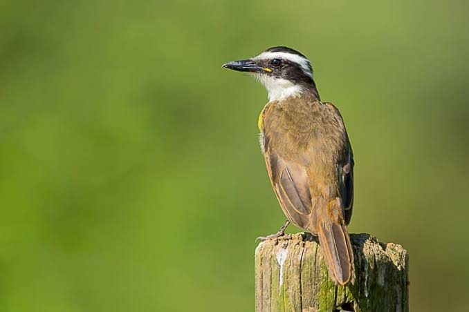
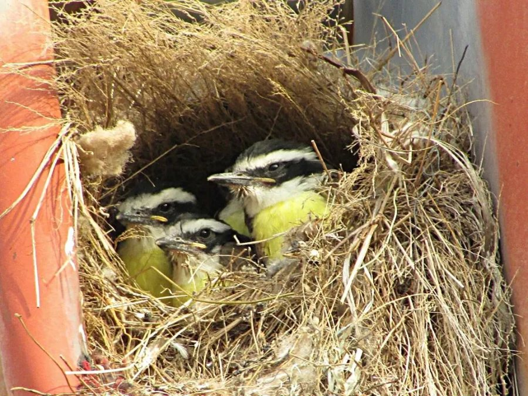
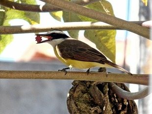
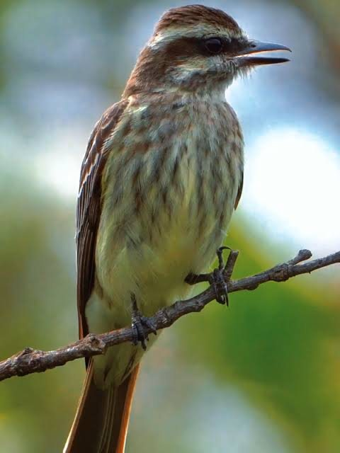
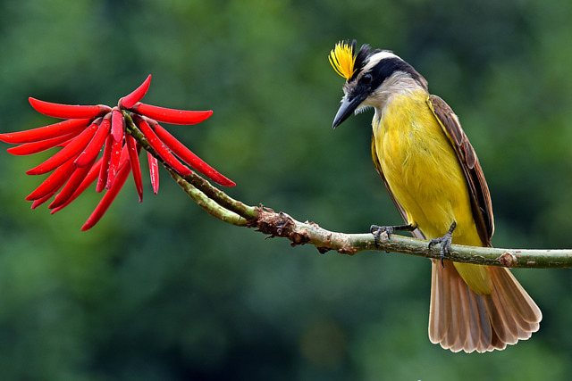

Para quem quer conhecer as naturezas do céu 🪶
Tire uma foto de uma ave e os Detetives de Penas descobrem quem ela é, onde vive e muitas curiosidades.
Use a câmera ou escolha uma foto. Quanto mais perto e nítida, melhor!
Fotos coletadas pela Isabelly. O bem-te-vi (Pitangus sulphuratus) canta o próprio nome: "bem-te-vi!"







